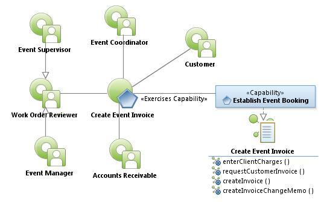
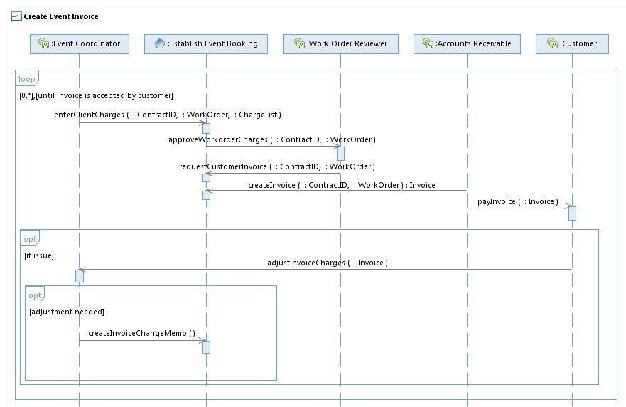

|
Create Event Invoice Use Case Specification
Select to enlarge...

Create Event Invoice Use Case Model
|
Scope: At the end of the event, the Event Coordinator uses
the system to input all client billable charges. The Work Order
Reviewer uses the system to verify and approve the Work Orders.
Accounts Receivable use the system to retrieve charges input by Event
Coordinator, apply discounts (room night credits, booking credits, food
and beverage credits), factors in deposits, add utility client invoice,
verifies all information, and creates an final Invoice. Account
Receivable mails a hard copy of the final invoice to the client and the
Event Coordinator receives a final invoice copy. If there are issues,
the Event Coordinator uses the system to create an Invoice Change Memo
documenting the concern and corrective action.
Select to enlarge...

Create Event Invoice Sequence Diagram
|
Table of Interface Descriptions
| Type/Interface | Description |
|---|
FS013
Establish Event Booking/
enterClientCharges |
The Event Coordinator uses the system to enter equipment charges,
labor charges, security charges, parking charges (when applicable),
discounts, facility rentals, damages, and other miscellaneous charges.
The Event Coordinator uses the system to indicate the Customer is ready
to be billed. |
Work Order Reviewer/
approveWorkorderCharges |
The Work Order Reviewer is sent a notification (email/text) that
the Work Order items are ready for approval. The Work Order Reviewer
examines the contract, and compares it with the charges entered for the
Work Order. If errors are found, they contact the appropriate
coordinator(s) and manipulate/change the Work Order until it is
complete and ready for Invoicing. The Work Order Reviewer indicates the
Work Order is ready for invoicing and a notification is sent to
Accounts receivable to create the final invoice. |
FS014
Establish Event Booking/
requestCustomerInvoice |
The Work Order Reviewer uses the system to indicate elements of the
Work Orders are complete. The system notifies Accounts Receivable that
all elements for a Work Order are entered and it is time to create a
customer invoice. |
FS015
Establish Event Booking/
createInvoice |
Accounts Receivable reviews the Work Order items ensuring the
client information (address, contact name, etc. are correct) and marks
the terms of net 30 for payment due. The invoice includes a preformed
address label/payment coupon to the Accounts Receivable. Accounts
Receivable uses the system to enter the date the invoice is mailed,
creates a PDF version of the invoice, and dispatches a copy of the
invoice to the Event Coordinator. If the client only requires soft
copy, the invoice is emailed to the client contact - otherwise a hard
copy is mailed. |
Customer/
payInvoice |
The Customer receives the event invoice in the form desired (email
or us postal service delivery), and evaluates the charges compared to
the contract and determines if there are issues. If there are issues,
they notify the event coordinator of the issues, possibly triggering a
revised invoice creation. [Technology opportunity: The system provides
the Customer the ability to view Work Order items online via a Web
portal, is desirable. Not all customer issues result in invoice
modification.] |
Event Coordinator/
adjustInvoiceCharges |
The Event Coordinator receives notification from the customer about
invoice specifics. The Event coordinator reviews the contract,
associated Work Order and attempts to resolve the concern. Should
changes be necessary, the Event Coordinator makes adjustments to the
Work Order and begins the Create Event Invoice process again by
entering client charges. |
FS016
Establish Event Booking/
createInvoiceChangeMemo |
The Event Coordinator determines adjustments (credits or debits)
are necessary for the Invoice. The Event Coordinator uses the system to
document adjusted Work Order items indicating debit or credit amount,
the justification for the change, the Contract ID for which this
applies, and any supporting documentation. |
|
{kind=link}
{kind=link}